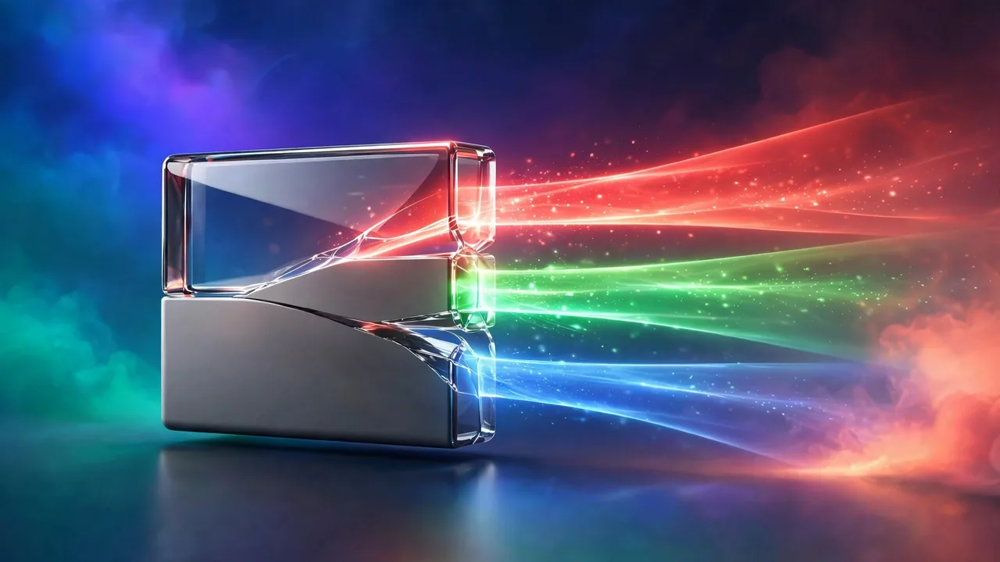
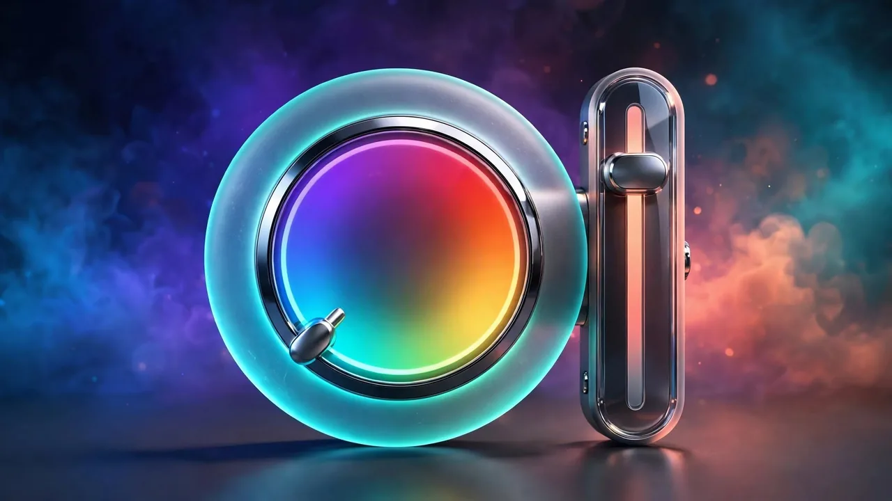
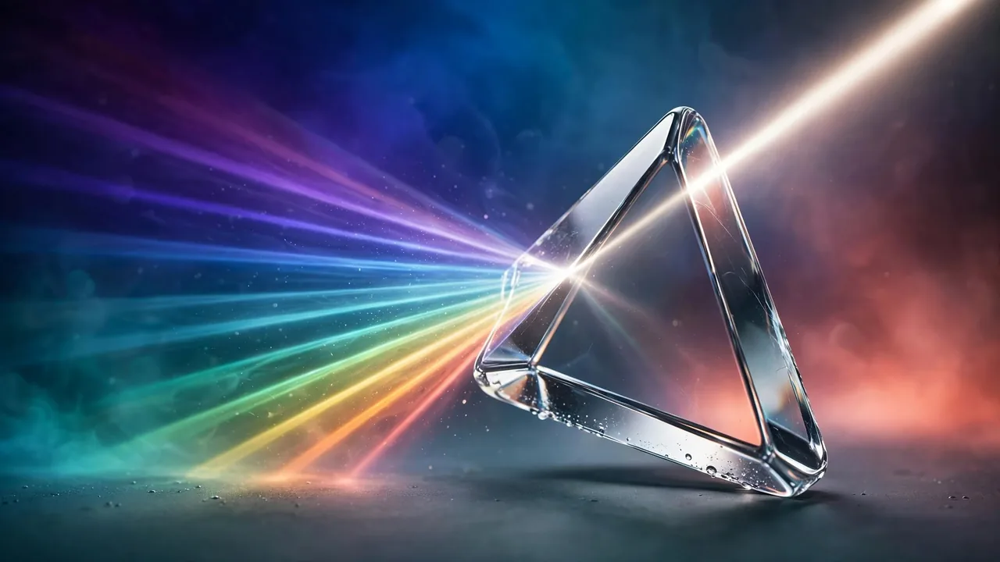
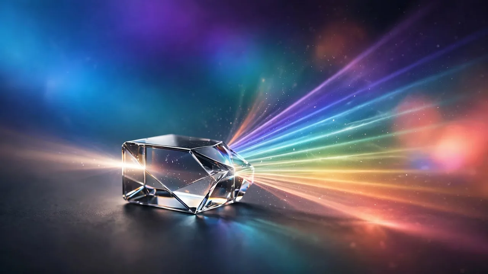

Understanding Color on the Web: Hex, RGB and HSL
What the three color notations mean, why HSL is easiest to adjust, and how to choose colors with confidence.
By 123MiniApps · Published 2026-08-02 · Updated 2026-10-03 · 1095 words · about 5 minute read

Color on the web is described with numbers, and there are three common notations for the same thing: hex, RGB and HSL. A color like a vivid blue can be written as #3B82F6, as rgb(59, 130, 246), or as hsl(217, 91%, 60%): all identical. Knowing what each notation means lets you choose, adjust and convert colors with confidence. The Color Picker shows all three and converts between them in your browser, and this article explains how they work.
Each notation describes the same colors but is suited to a different task. Hex and RGB describe a color by its ingredients; HSL describes it by qualities humans intuitively understand, which is why it is so much easier to adjust.
RGB and hex: the ingredients of color
Screens create color by mixing red, green and blue light. RGB notation states exactly how much of each, from 0 to 255, so rgb(59, 130, 246) means a little red, more green, and a lot of blue, producing that blue. Hex is the same three numbers written in base 16: #3B82F6 is 3B (59) red, 82 (130) green, F6 (246) blue. Hex is compact and ubiquitous in web code; RGB is the same information in decimal, and is handy when you want to reason about the amounts directly or add transparency. They are two spellings of the identical recipe.

HSL: color the way humans think
HSL describes a color by hue, saturation and lightness, qualities that match how we naturally think about color. Hue is the color itself, given as an angle from 0 to 360 around a color wheel (red at 0, green at 120, blue at 240). Saturation is how vivid or grey it is, from 0% to 100%. Lightness is how light or dark, from black at 0% to white at 100%. This is powerful because adjusting a color becomes intuitive: to make it darker, lower the lightness; to make it more muted, lower the saturation; to shift it toward a neighbouring color, change the hue. Doing the same in hex or RGB means recalculating all three channels.
HSL is the best notation for tweaking a color, nudging lightness or saturation is intuitive. Hex is the best for using it in code, being compact and universal. Design in HSL, deliver in hex, and let a picker convert between them.
Choosing colors with confidence
Understanding HSL turns color choice from guesswork into something systematic. Want a darker shade of your brand color for a hover state? Keep the hue and saturation, lower the lightness. Want a muted version for a background? Lower the saturation. Want a set of colors that belong together? Vary the hue in even steps while keeping saturation and lightness consistent. Thinking in HSL lets you build deliberate, related colors instead of picking them at random and hoping they match, which is the foundation of a coherent palette.
Transparency and modern color
Both RGB and HSL have variants that add an alpha channel for transparency, RGBA and HSLA, where a fourth value from 0 to 1 sets opacity. This is essential for overlays, shadows and layered effects where you want a color to be partly see-through. Modern CSS also supports hex with an alpha value and newer color formats, but the core idea is unchanged: you are specifying red, green and blue amounts, or hue, saturation and lightness, plus optionally how opaque the color is. A picker that exposes all these forms lets you copy whichever your context needs.

Pick any color and see it in hex, RGB and HSL with instant conversion between them, entirely in your browser.
Color as part of a system
A single color is rarely the end goal; it is the seed of a wider design. Once you have chosen a color, a color palette generator builds a coordinated scheme around it, a contrast checker confirms text will be readable against it, and a gradient generator blends it into backgrounds. Understanding the notations is what ties these together, because every one of these tools speaks in hex, RGB and HSL.
Opacity, transparency and layering colour
Beyond the three core notations, one more dimension matters constantly in real interfaces: opacity. The alpha channel, the 'A' in RGBA and HSLA, sets how transparent a colour is, from fully see-through at 0 to fully solid at 1. This is what makes overlays, drop shadows, frosted panels and subtle tints possible, because a semi-transparent colour lets whatever sits behind it show through, blended. A shadow is really just black at low opacity; a hover highlight is often the accent colour at ten or fifteen percent.

Thinking in terms of a base colour plus an opacity unlocks a cleaner way to build interfaces. Rather than hand-picking a slightly lighter grey for every subtle background, you can take one colour and layer it at different opacities to create a whole family of related tints that automatically harmonise, because they share the same underlying hue. Modern CSS makes this even easier with functions that mix a colour with transparency on the fly. The practical upshot is that colour is not just the flat swatch you pick, it is that swatch at a chosen strength, sitting over whatever is beneath it. Once you start seeing colours as adjustable in opacity as well as hue, saturation and lightness, you gain a much more flexible palette from the same small set of base colours, and your interface gains a sense of depth and cohesion that flat, fully-opaque colours alone cannot provide.
To sum up: web color is described by hex, RGB and HSL, which are three notations for the same red-green-blue reality. Hex and RGB state the ingredients directly and are ideal for code; HSL describes hue, saturation and lightness the way people think, making colors easy to adjust and relate. Design and tweak in HSL, deliver in hex, use the alpha variants for transparency, and lean on a picker to convert. Grasp the three notations and color stops being a matter of luck and becomes something you can reason about deliberately.